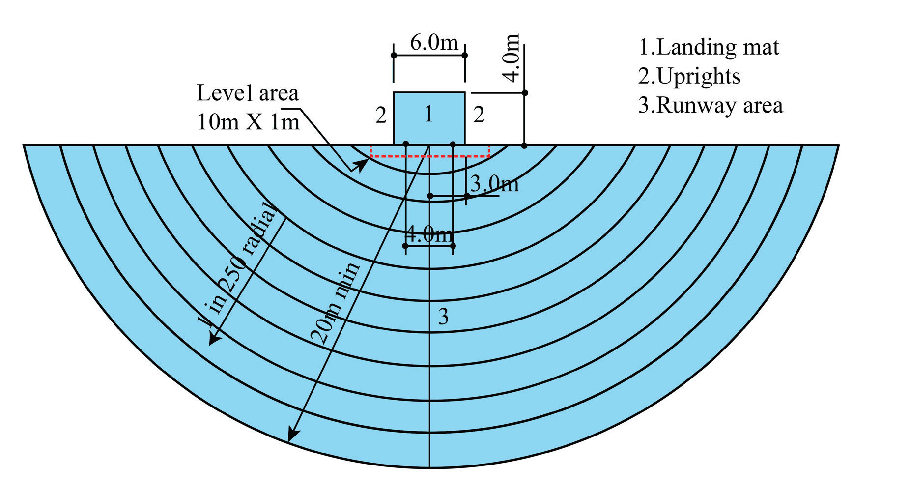
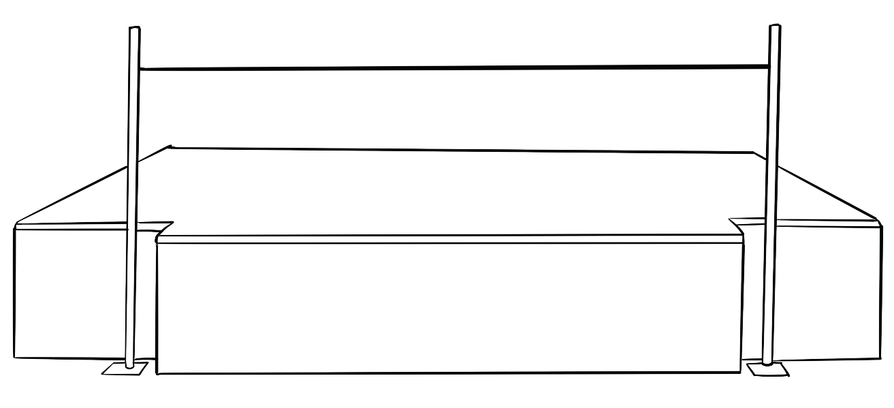

Moreover, the length and width of the landing area are about 5 m and 3 m respectively. The landing area can be covered by landing mats or other suitable materials or a pit cushioned by mattresses, sawdust or rice hull. It is rectangular as shown in Figure 2.34.

High jump equipment
The common equipment for the high jump is stands, a crossbar, landing bags, a measuring stick or tape, markers, flags, bloom, and restraining straps.
Stands
A stand comprises two vertical bars with an adjustable bracket for holding the crossbar, Figure 2.35. The distance between the two stands ranges from 4.00 m – 4.04 m.
SPORTS STUDIES FORM TWO.indd 63
9/17/25 9:54 AM